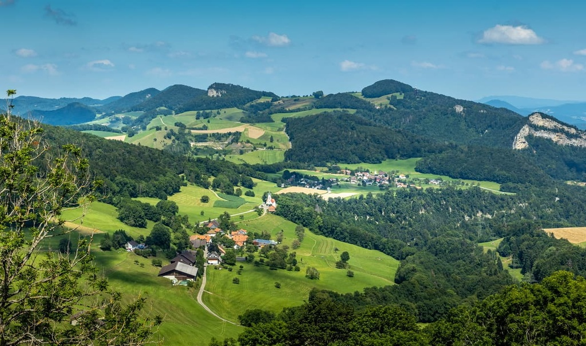

The Jura
The Jura Mountains (/(d)ʒʊərə/ JOOR-ə, ZHOOR-ə) are a sub-alpine mountain range a short distance north of the Western Alps and mainly demarcate a long part of the French Swiss border. While the Jura range proper ("folded Jura", Faltenjura) is located in France and Switzerland, the range continues as the Table Jura ("not folded Jura", Tafeljura) northeastwards through northern Switzerland and Germany.
The mountain range gives its name to the French department of Jura, the Swiss canton of Jura, the Jurassic period of the geologic timescale, and the Montes Jura of the Moon.
It is first attested as mons Iura in book one of Julius Caesar's Commentarii de Bello Gallico. Strabo uses a Greek masculine form ὁ Ἰόρας ("through the Jura mountains", διὰ τοῦ Ἰόρα ὄρους) in his Geographica (4.6.11). Based on suggestions by Ferdinand de Saussure, early celticists such as Georges Dottin tried to establish an etymon "iura-, iuri" as a Celtic word for mountains, with similar putative etymologies (e.g. *juris, "mountainous forest") still appearing in more recent non-academic publications. However, since there are no clear cognates in the surviving corpus of the Celtic languages, modern studies of Proto-Celtic and Gaulish etymology tend not to list any lemmata connected to Jura, and the name must be considered fundamentally unclear.
Tourism
The Jura range offer a variety of tourist activities including hiking, cycling, downhill skiing and cross-country skiing. There are many signposted trails including the Jura ridgeway, a 310 km (190 mi) hiking route.
Tourist attractions in the Swiss Jura include natural features such as the Creux du Van, lookout peaks such as the Chasseral, caves such as the Grottes de l'Orbe, as well as gorges such as Taubenloch. The Swiss Jura has been industrialized since the 18th century and became a major centre of the watchmaking industry. The area has several cities at very high altitudes, such as La Chaux-de-Fonds, Le Locle and Sainte-Croix (renowned for its musical boxes); however, it generally has had a marked decline in population since 1960. Both Le Locle and its geographical twin town La Chaux-de-Fonds are recognised as an UNESCO World Heritage Site for their horological and related cultural past.
In the French Jura, the 11th-century Fort de Joux, famously remodeled and strengthened by Vauban in 1690 and subsequently by other military engineers, is situated on a natural rock outcropping in the middle of the range not far from Pontarlier. Part of the A40 autoroute crosses through a portion of the southern Jura between Bourg-en-Bresse and Bellegarde-sur-Valserine, which is known as the "Highway of the Titans".